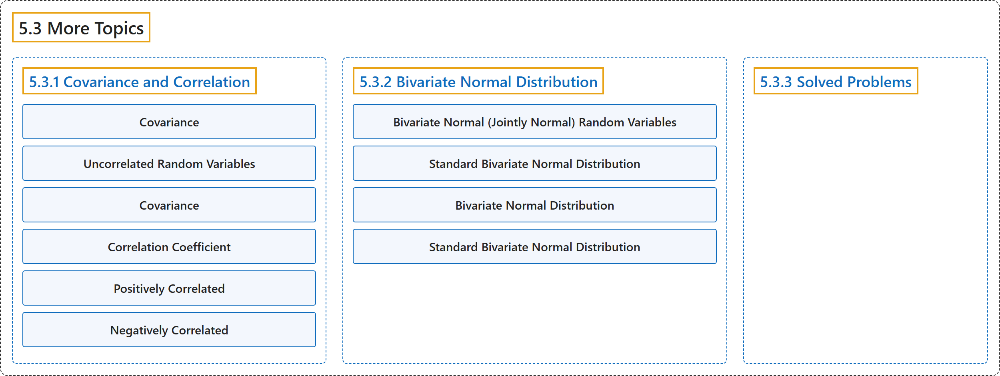

5.3 More Topics
Classification

Glossary
| Term | Definition | 中文翻译 | Source |
|---|---|---|---|
| 5.3 More Topics 更多专题 |
(No definition) | （无定义） | Pishro-Nik, 2014, section 5.3 |
| 5.3.1 Covariance and Correlation 协方差与相关 |
(No definition) | （无定义） | Pishro-Nik, 2014, section 5.3.1 |
| Covariance 协方差 |
"The covariance between \(X\) and \(Y\) is defined as" | \(X\) 与 \(Y\) 之间的协方差定义为 | Pishro-Nik, 2014, section 5.3.1 |
| Uncorrelated Random Variables 不相关随机变量 |
"If \(\rho(X,Y)=0\), we say that \(X\) and \(Y\) are uncorrelated." | 若 \(\rho(X,Y)=0\)，则称 \(X\) 和 \(Y\) 不相关。 | Pishro-Nik, 2014, section 5.3.1 |
| Covariance 协方差 |
"The covariance between \(X\) and \(Y\) is defined as \(\begin{align} \nonumber \textrm{Cov}(X,Y)&=E\big[(X-EX)(Y-EY)\big]=E[XY]-(EX)(EY). \end{align}\)" | \(X\) 与 \(Y\) 之间的协方差定义为 \(\begin{align} \nonumber \textrm{Cov}(X,Y)&=E\big[(X-EX)(Y-EY)\big]=E[XY]-(EX)(EY). \end{align}\) | Pishro-Nik, 2014, section 5.3.1 |
| Correlation Coefficient 相关系数 |
"The correlation coefficient, denoted by \(\rho_{XY}\) or \(\rho(X,Y)\), is obtained by normalizing the covariance." | 相关系数记作 \(\rho_{XY}\) 或 \(\rho(X,Y)\)，由协方差标准化得到。 | Pishro-Nik, 2014, section 5.3.1 |
| Positively Correlated 正相关 |
"In this case, the covariance is positive and we say \(X\) and \(Y\) are positively correlated." | 在这种情况下，协方差为正，我们说 \(X\) 和 \(Y\) 正相关。 | Pishro-Nik, 2014, section 5.3.1 |
| Negatively Correlated 负相关 |
"In this case, the covariance is negative and we say \(X\) and \(Y\) are negatively correlated." | 在这种情况下，协方差为负，我们说 \(X\) 和 \(Y\) 负相关。 | Pishro-Nik, 2014, section 5.3.1 |
| 5.3.2 Bivariate Normal Distribution 二元正态分布 |
(No definition) | （无定义） | Pishro-Nik, 2014, section 5.3.2 |
| Bivariate Normal (Jointly Normal) Random Variables 二元正态（联合正态）随机变量 |
"Two random variables \(X\) and \(Y\) are said to be bivariate normal, or jointly normal, if \(aX+bY\) has a normal distribution for all \(a,b \in \mathbb{R}\)." | 若对所有 \(a,b \in \mathbb{R}\)，\(aX+bY\) 都服从正态分布，则称两个随机变量 \(X\) 和 \(Y\) 服从二元正态分布，或联合正态。 | Pishro-Nik, 2014, section 5.3.2 |
| Standard Bivariate Normal Distribution 标准二元正态分布 |
"Two random variables \(X\) and \(Y\) are said to have the standard bivariate normal distribution with correlation coefficient \(\mathbf{\rho}\) if their joint PDF is given by" | 若两个随机变量 \(X\) 和 \(Y\) 的联合概率密度函数为如下形式，则称它们服从相关系数为 \(\mathbf{\rho}\) 的标准二元正态分布 | Pishro-Nik, 2014, section 5.3.2 |
| Bivariate Normal Distribution 二元正态分布 |
"Two random variables \(X\) and \(Y\) are said to have a bivariate normal distribution with parameters \(\mu_X\), \(\sigma^2_X\), \(\mu_Y\), \(\sigma^2_Y\), and \(\rho\), if their joint PDF is given by \(\begin{align} \nonumber &f_{XY}(x,y)=\frac{1}{2 \pi \sigma_X \sigma_Y \sqrt{1-\rho^2}} \cdot\\ &\exp \left\{-\frac{1}{2 (1-\rho^2)}\bigg[\bigg(\frac{x-\mu_X}{\sigma_X}\bigg)^2 +\bigg(\frac{y-\mu_Y}{\sigma_Y}\bigg)^2-2\rho \frac{(x-\mu_X)(y-\mu_Y)}{\sigma_X \sigma_Y} \bigg] \right\} (5.24) \end{align}\)" | 若两个随机变量 \(X\) 和 \(Y\) 的联合概率密度函数由 \(\begin{align} \nonumber &f_{XY}(x,y)=\frac{1}{2 \pi \sigma_X \sigma_Y \sqrt{1-\rho^2}} \cdot\\ &\exp \left\{-\frac{1}{2 (1-\rho^2)}\bigg[\bigg(\frac{x-\mu_X}{\sigma_X}\bigg)^2 +\bigg(\frac{y-\mu_Y}{\sigma_Y}\bigg)^2-2\rho \frac{(x-\mu_X)(y-\mu_Y)}{\sigma_X \sigma_Y} \bigg] \right\} (5.24) \end{align}\) 给出，则称它们服从参数为 \(\mu_X\)、\(\sigma^2_X\)、\(\mu_Y\)、\(\sigma^2_Y\) 和 \(\rho\) 的二元正态分布 | Pishro-Nik, 2014, section 5.3.2 |
| Standard Bivariate Normal Distribution 标准二元正态分布 |
"Similar to our discussion on normal random variables, we start by introducing the standard bivariate normal distribution and then obtain the general case from the standard one." | 与我们对正态随机变量的讨论类似，我们从引入标准二元正态分布开始，然后由标准情形得到一般情形。 | Pishro-Nik, 2014, section 5.3.2 |
| 5.3.3 Solved Problems 例题详解 |
(No definition) | （无定义） | Pishro-Nik, 2014, section 5.3.3 |
References
Pishro-Nik, H. (2014). Introduction to probability, statistics, and random processes. Kappa Research. Retrieved October 28, 2026, from https://www.probabilitycourse.com/